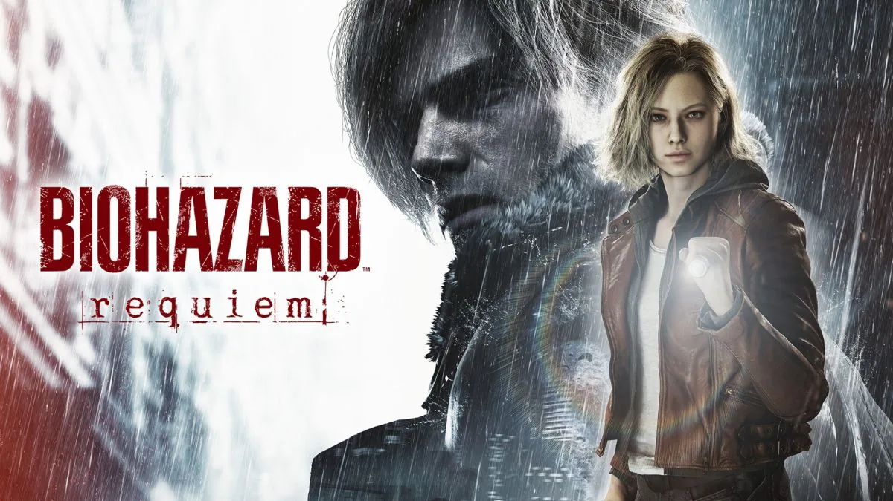

コスパ重視迷ったらこれ
FHD 高画質
- CPU
- Ryzen 5 7500F
- GPU
- RTX 5060VRAM 8GB
- AMDなら
- RX 9060 XTVRAM 16GB
- メモリ
- 16GB
- PC本体の予算
- 17万〜21万円前後
描画性能スコア（GPU GUIDE）58
線＝公式推奨GPU（RTX 2060 SUPER）
公式推奨より一段上のGPUで、FHD高画質を狙う構成。暗い場面の多い本作でも画質を落とさず遊びやすくなります。

サバイバルホラーPC負荷：普通新作
2026年2月27日に発売されたバイオハザード レクイエムの公式推奨はRTX 2060 Super / RX 6600です。ただしこれは「内部720pをアップスケーリングしてFHD 60fps」という条件つきの目安です。ネイティブに近い高画質で遊ぶならRTX 5060クラス以上、PC版で使えるパストレーシングを試すならRTX 5070 Ti以上を目安にしましょう。
QUICK ANSWER
OFFICIAL SPEC
ゲームの公式情報に掲載されている動作環境です（2026年10月18日確認）。「最低」は起動して遊べる下限、「推奨」は標準的な画質で遊ぶ目安で、高画質・高fpsを保証するものではありません。公式に記載のない項目は「記載なし」としています。
| 項目 | 最低 | 推奨 |
|---|---|---|
| OS | Windows 11（64bit） | Windows 11（64bit） |
| CPU | Intel Core i5-8500 / AMD Ryzen 5 3500 | Intel Core i7-8700 / AMD Ryzen 5 5500 |
| GPU | GeForce GTX 1660 6GB / Radeon RX 5500 XT 8GB | GeForce RTX 2060 Super 8GB / Radeon RX 6600 8GB |
| VRAM | 6GB / 8GB | 8GB |
| メモリ | 16GB | 16GB |
| ストレージ | SSD必須（容量はストアページで確認） | SSD必須（容量はストアページで確認） |
| 想定される動作 | FHD（内部640pからアップスケーリング）で30fps | FHD（内部720pからアップスケーリング）で60fps |
処理の負荷が高い場面ではフレームレートが低下する場合があると案内されています。
出典：Steam ストアページ（Resident Evil Requiem）／NVIDIA GeForce News（パストレーシング・DLSS 4対応）
SIPPO PICK
ここからは公式スペックではなく、Sippoが快適さと予算のバランスで選んだ構成です。fpsは画質設定や場面で大きく変わるため、実測していない数値は載せていません。
コスパ重視迷ったらこれ
線＝公式推奨GPU（RTX 2060 SUPER）
公式推奨より一段上のGPUで、FHD高画質を狙う構成。暗い場面の多い本作でも画質を落とさず遊びやすくなります。
バランス重視
線＝公式推奨GPU（RTX 2060 SUPER）
WQHDでレイトレーシングを使いたい人向け。アップスケーリングと組み合わせて画質と滑らかさのバランスを取ります。
高画質重視
線＝公式推奨GPU（RTX 2060 SUPER）
パストレーシングを試したい人向け。NVIDIAの案内どおりDLSSのフレーム生成と組み合わせる前提の構成です。
予算はBTOの完成品（Windows付き）を想定した2026年10月時点の目安です。2026年はメモリとSSDの値上がりで価格が動きやすく、セールや構成の違いで数万円変わります。「推定」の付いた価格帯は、同じ構成の販売例を確認できず、近い構成の価格から推定した目安です。描画性能スコアはGPU GUIDEの数値で、DLSSなどの機能を除いた描画性能の相対値です（fpsではありません）。AMDの欄は、同じ価格帯で選べるRadeonの候補です。PC BUILD CHECKの参考価格も同じくBTO完成品の目安ですが、パーツごとの価格から計算した概算で、価格を確認した時期も違うため、このページの目安より低く出ることがあります。
RESOLUTION
解像度ごとのGPUの目安です。実測ベンチマークではなく、公式スペックとGPU同士の性能差から整理したSippoの目安です。
| 解像度 | GPUの目安 | 狙える目標 | 補足 |
|---|---|---|---|
| FHD | RTX 5060 / RX 9060 XT 16GB | 高画質（アップスケーリング併用） | 公式推奨の条件（内部720p）より高い画質を狙えます。 |
| WQHD | RTX 5070 / RX 9070 | 高画質＋レイトレーシング | アップスケーリングの品質寄りモードと組み合わせます。 |
| 4K | RTX 5070 Ti 以上 | パストレーシング（DLSS＋フレーム生成） | パストレーシングは非常に重く、NVIDIAもDLSSとの組み合わせを前提に案内しています。 |
画質設定・アップスケーリング：PC版はレイトレーシングに加えて、GeForce RTX向けにパストレーシング、DLSS 4（RTX 50シリーズはマルチフレーム生成）、Reflexに対応しています（NVIDIAの発表による）。パストレーシングの使用時はDLSSのレイ再構成が自動で有効になります。
GAME POINTS
公式推奨の「FHD 60fps」は、内部で720pの解像度で描いた映像をアップスケーリングした場合の目安です。くっきりした高画質で遊びたいなら、公式推奨より上のGPUが必要になります。
PC版ではパストレーシングを使えます。光や影の表現は大きく向上しますが、負荷は通常の設定とは比べものにならないほど重くなります。RTX 5070 Ti以上のGPUとDLSSのフレーム生成を組み合わせるのが現実的です。
ホラーゲームで暗い場面が多く、影や光の表現が雰囲気を大きく左右します。低い画質設定では暗部がつぶれて見えにくくなることもあるので、少し余裕のある構成で画質を上げて楽しむのがおすすめです。
FAQ
RTX 3060は公式推奨（RTX 2060 Super）と同程度以上の性能なので、FHDでアップスケーリングを使えば60fpsが目安です。12GB版ならテクスチャ設定も上げやすくなります。
NVIDIAはパストレーシングをGeForce RTX向けの機能として案内しています。Radeonでの対応状況はゲーム内の設定画面で確認してください。レイトレーシング（通常）はRadeonでも使えます。
Steamの公式動作環境は最低・推奨ともWindows 11（64bit）と記載されています。Windows 11環境を用意するのが安全です。
RELATED GAMES
このページの最終更新： ／ 公式スペックの確認：2026年10月18日 ／ 価格の確認：2026年10月18日